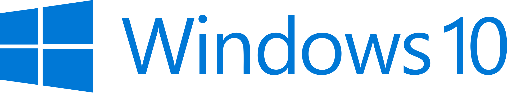

https://docs.python.org/3/using/windows.html
Using Python on Windows
https://docs.microsoft.com/en-us/windows/python/beginners
Get started using Python on Windows for beginners
https://docs.microsoft.com/en-us/windows/python/faqs
Frequently Asked Questions about using Python on Windows
Windows does not include a system supported installation of Python. To make Python available, the CPython team has compiled Windows installers (MSI packages) with every release for many years.
Python 3.9 supports Windows 8.1 and newer.
Multiple versions of Python can be installed on your machine and these all use the 'python' command. It is recommended to use the 'python3' command (or 'python3.8' to select a specific version).
The 'py.exe' launcher will automatically select the most recent version of Python you've installed. You can also use commands like 'py -3.8' to select a particular version, or 'py --list' to see which versions can be used.
https://notepad-plus-plus.org/
Notepad++ is a free source code editor and Notepad replacement that supports several languages. Running in the MS Windows environment, its use is governed by GNU General Public License.
Based on the powerful editing component Scintilla, Notepad++ is written in C++ and uses pure Win32 API and STL which ensures a higher execution speed and smaller program size.
https://assets.enthought.com/documentation/
https://support.enthought.com/hc/en-us/articles/360034191232
Using the Enthought Deployment Manager (EDM)
with the Visual Studio Code (VS Code) IDE
Enthought's Python Distribution is the Python which is installed by EDM or Canopy. It provides over 1000 Python packages to scientists and engineers.
The Canopy GUI is at end of life (2019).
The Enthought Deployment Manager (EDM) is the preferred tool for installation and management of packages. EDM can be used with Microsoft's free, open-source, extensible, multi-platform Visual Studio Code (VS Code) as an IDE. Operating systems for EDM (minimum versions): Window 7 (msi), Debian 8 (deb), CentOS 6.10 (rpm), macOS 10.10 (pkg).